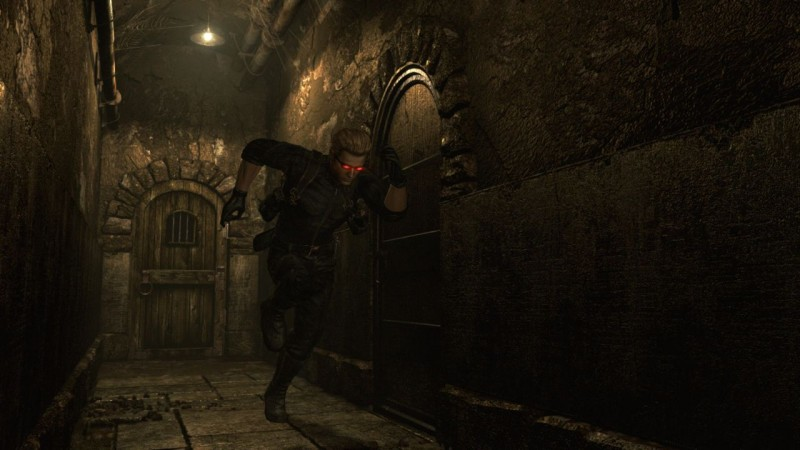

Monsters
Game Play
Resident Evil
Resident Evil
SummaryResident Evil is a 1996 survival horror video game developed and published by Capcom originally for the PlayStation. It is the first title in Capcom's Resident Evil franchise. Players control Chris Redfield and Jill Valentine, members of the elite task force S.T.A.R.S., who must escape a mansion infested with zombies and other monsters.
Characters- Rebecca Chambers,
- Albert Wesker,
- Chris Redfield,
- Jill Valentine,
- Barry Burton,
- Brad Vickers
Monsters
- Zombies,
- Hunter,
- Cerberus,
- Wasps,
- Giant Spider,
- Chimera,
- Plant 42,
- Yawn,
- Adder,
- Neptune,
- Crimson Head,
- Tyrant
Game Play
Resident Evil 2
Resident Evil 2
SummaryResident Evil 2 is a 1998 survival horror video game developed and published by Capcom for the PlayStation. The player controls Leon S. Kennedy and Claire Redfield , who must escape Raccoon City after its citizens are transformed into zombies by a biological weapon two months after the events of the original Resident Evil.
Characters- William Burkin,
- Leon Kennedy,
- Chris Redfield,
- Claire Redfield,
- Ada Wong,
- Brad Vickers,
- Sherry Birkin,
- HUNK
Monsters
- Nemesis,
- T-103,
- Licker,
- Cockroaches,
- Poison Ivy,
- Moths,
- G-Larvae,
- Alligator,
- Brain Sucker,
- Drain Deimos,
- Grave Digger,
- Sliding Worm
Game Play
Resident Evil 3
Resident Evil 3
SummaryTwo months after surviving the grisly disaster at the mansion lab, Jill Valentine resigns from S.T.A.R.S. and attempts to escape the ruined nightmarish Racoon city. Two months after surviving the grisly disaster at the mansion lab, Jill Valentine resigns from S.T.A.R.S. and attempts to escape a nightmarish city in ruins. Trapped in a town crawling with hordes of flesh-eating zombies, hideous mutants, and a relentless new nemesis, she must rely on cunning and brute force to stay alive. What she soon discovers is that the evil created by Umbrella Corporation's bio-tech terror is even more horrifying then she ever imagined...
Characters- Mikhail Viktor,
- Carlos Oliviera,
- Nikolai Zinoviev,
- Jill Valentine,
- Barry Burton,
- Brad Vickers
Monsters
- Nemesis,
- T-103,
- Licker,
- Cockroaches,
- Poison Ivy,
- Moths,
- G-Larvae,
- Alligator,
- Brain Sucker,
- Drain Deimos,
- Grave Digger,
- Sliding Worm
Game Play
Resident Evil 4
Resident Evil 4
SummaryResident Evil 4 is a 2005 survival horror third-person shooter game developed by Capcom Production Studio 4 and published by Capcom. It was originally released for the GameCube on January 11, 2005. Players control U.S. government special agent Leon S. Kennedy , who is sent on a mission to rescue the U.S. president's daughter Ashley Graham , who has been kidnapped by a cult.
Characters- Leon Kennedy,
- Albert Wesker,
- Ada Wong,
- HUNK,
- Ashley Graham,
- Ingrid Hunnigan,
- Jack Krauser
Monsters
- Ganado,
- Monks/Zealots,
- Commandos,
- Parasites,
- Colmillos,
- Novistadors,
- Regenerators/Iron Maidens,
- Del Lago,
- El Gigante,
- Mendez,
- Garrador,
- Verdugo,
- Ramon Salazar,
- U3,
- Krauser,
- Saddler,
Game Play
Resident Evil 5
Resident Evil 5
SummaryResident Evil 5 is a third-person shooter video game developed and published by Capcom. It is a major installment in the Resident Evil series, and was announced in 2005—the same year its predecessor Resident Evil 4 was released. Resident Evil 5 was released for the PlayStation 3 and Xbox 360 consoles in March 2009 and for Microsoft Windows in September that year. The plot involves an investigation of a terrorist threat by Bioterrorism Security Assessment Alliance agents Chris Redfield and Sheva Alomar in Kijuju, a fictional region of West Africa. Chris learns that he must confront his past in the form of an old enemy, Albert Wesker, and his former partner, Jill Valentine.
Characters- Rebecca Chambers,
- Albert Wesker,
- Chris Redfield,
- Jill Valentine,
- Barry Burton,
- Sheva Alomar,
- Josh Stone,
- Excella Glonne
Monsters
- Majini,
- Matured Las Plagas,
- Adjule,
- Crocodile,
- Bui Kichwa,
- Licker B,
- Reaper,
- Popkarimu,
- Ndesu,
- U-8
Game Play

Resident Evil 6
Resident Evil 6
SummaryResident Evil 6 is a 2012 third-person shooter video game developed and published by Capcom. A major installment in the Resident Evil series, Resident Evil 6 was released for the PlayStation 3 and Xbox 360 in October 2012, and for Windows in March 2013. Players control Leon S. Kennedy, Chris Redfield, Jake Muller and Ada Wong as they confront the force behind a worldwide bio-terrorist attack. The story is centred around their four interwoven campaigns, and every campaign features a unique style in both tone and gameplay.
Characters- Leon Kennedy,
- Ada Wong,
- Chris Redfield,
- Sherry Birkin,
- Ingrid Hunnigan,
- Jake Muller,
- Helena Harper,
- Piers Nivans,
- Carla Radames,
- "Agent"
Monsters
- Bloodshot,
- Brzak,
- Carla Spore,
- Complete Mutant,
- Glava,
- Gnezdo,
- HAOS,
- Iluzija ,
- J'avo,
- Lepotica,
- Mesec,
- Napad,
- Noga,
- Ogroman,
- Oko,
- Rasklapanje,
- Ruka,
- Shrieker,
- Strelac,
- Telo,
- Ubistvo,
- Ustanak,
- Whopper,
- C-Virus Zombie,
- Zombie Dog
Game Play
Resident Evil 7
Resident Evil 7
SummaryResident Evil 7: Biohazard is a 2017 survival horror game developed and published by Capcom. The player controls Ethan Winters as he searches for his long-missing wife in a derelict plantation occupied by an infected family, solving puzzles and fighting enemies. Resident Evil 7 diverges from the more action-oriented Resident Evil 5 and Resident Evil 6, returning to the franchise's survival horror roots, emphasizing exploration. It is the first main Resident Evil game to use a first-person view.
Characters- Ethan Winters,
- Mia Winters,
- Jack Baker,
- Maguerite Baker,
- Lucas Baker,
- Zoe Baker,
- Eveline,
- Peter Walken,
- Clancy Jarvis,
- Andre Strickland,
- David Anderson,
- Alan Droney,
- Chris Redfield,
- Joe Baker,
- Veronica,
- Marquez
Monsters
- Blade Molded,
- Jack Baker,
- Lucas Baker,
- Marguerite Baker,
- Double Blade Molded,
- Eveline,
- Fat Molded,
- Fumer,
- Headless Fat Molded,
- Hoffman,
- Little Crawler,
- Mama Mold,
- Man-eating creatures,
- Molded,
- Quick Molded,
- Mia Winters
Game Play
Resident Evil 8
Resident Evil 8
SummaryResident Evil: Village is a 2021 survival horror game developed and published by Capcom. It is the sequel to Resident Evil 7: Biohazard (2017). Players control Ethan Winters, who searches for his kidnapped daughter in a village filled with mutant creatures. Village maintains survival horror elements from previous Resident Evil games, with players scavenging environments for items and managing resources. However, it adds more action-oriented gameplay, with higher enemy counts and a greater emphasis on combat.
Characters- Rebecca Chambers,
- Albert Wesker,
- Chris Redfield,
- Jill Valentine,
- Barry Burton,
- Brad Vickers
Monsters
- Angie,
- Baby,
- Donna Beneviento,
- Cadou,
- Lady Dimitrescu and Daughters,
- Eveline,
- Executioner,
- Face Eaters,
- Hauler,
- Karl Heisenberg,
- Living Dolls,
- Lycan,
- Miranda,
- Salvatore Moreau,
- Moroaicǎ,
- Samcă,
- Soldat,
- Sturm,
- Uriaș,
- Vârcolac,
- Witch
Game Play